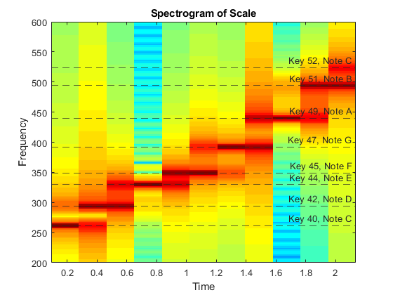
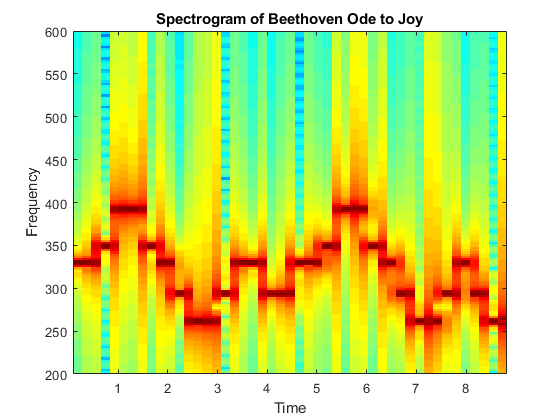

Contents
%{ Yonatan Carver ECES 352 - Lab 5 %} clear; clc; close all
3.1 Note Frequency Function
%{ function xx = key2note(X, keynum, dur) % KEY2NOTE Produce a sinusoidal waveform corresponding to a given piano % key number % usage: % xx = the output sinusoudal waveform % X = complex amplitude for the sinusoid, X = A*exp(j*phi) % keynum = the piano keyboard number of the desired note % dur = the duration (in seconds) of the output note fs = 11025; tt = 0 : (1/fs) : dur; freq = (440) * 2^((keynum-49)/12); xx = real( X * exp(j * 2 * pi * freq * tt)); %}
3.2 Synthesize a Scale
playscale.m
scale.keys = [40 42 44 45 47 49 51 52]; % Notes = C D E F G A B C % Key 40 is middle-C scale.durations = 0.3 * ones(1, length(scale.keys)); fs = 11025; % 8000Hz xx = zeros(1, sum(scale.durations) * fs + length(scale.keys)); n1 = 1; for kk = 1:length(scale.keys) keynum = scale.keys(kk); % function xx = key2note(X, keynum, dur) tone = key2note(20, keynum, scale.durations); n2 = n1 + length(tone) - 1; xx(n1:n2) = xx(n1:n2) + tone; n1 = n2 + 1; end % soundsc(xx, fs)
3.3 Spectrogram: Two M-files
specgram(xx, 4096, fs); title('Spectrogram of Scale') ylim([200 600]) yline(261.63, '--','Key 40, Note C'); yline(293.66, '--','Key 42, Note D'); yline(329.63, '--','Key 44, Note E'); yline(349.23, '--','Key 45, Note F'); yline(392.00, '--','Key 47, Note G'); yline(440.00, '--','Key 49, Note A'); yline(493.88, '--','Key 51, Note B'); yline(523.25, '--','Key 52, Note C');
Beethoven Ode To Joy
scale.keys = [44 44 45 47 47 45 44 42 40 40 42 44 44 42 42 44 44 45 47 47 45 44 42 40 40 42 44 42 40 40]; % Notes = E E F G G F E D C C D E E D D E E F G G F E D C C D E D C C % Key 40 is middle-C scale.durations = 0.3 * ones(1, length(scale.keys)); fs = 11025; % 8000Hz xx = zeros(1, sum(scale.durations) * fs + length(scale.keys)); n1 = 1; for kk = 1:length(scale.keys) keynum = scale.keys(kk); % function xx = key2note(X, keynum, dur) tone = key2note(20, keynum, scale.durations); n2 = n1 + length(tone) - 1; xx(n1:n2) = xx(n1:n2) + tone; n1 = n2 + 1; end % soundsc(xx) specgram(xx, 4096, fs); title('Spectrogram of Beethoven Ode to Joy') ylim([200 600])